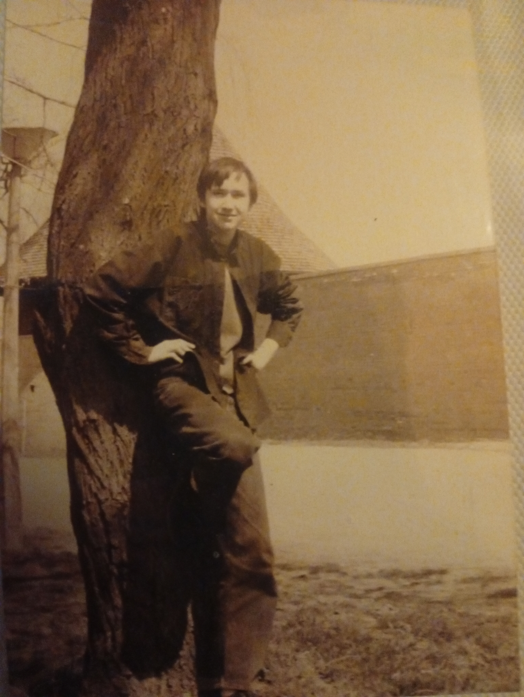
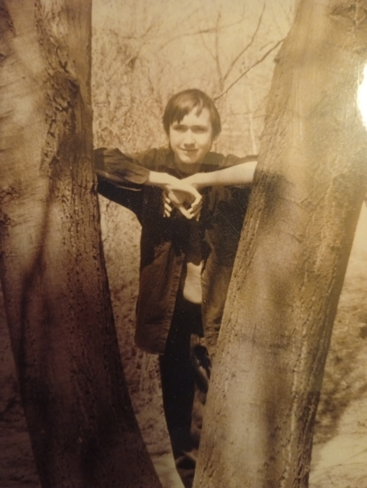

MÁRTON RÓBERT HETÉNY
Üdvözletem
Mivel ez életem első olyan weblapja, amit önállóan szerkesztek, ezért kérek mindenkit, hogy nagy csodát ne várjon el tőlem elsőre. Megteszem, ami tőelm telik, és igyekszem folyamatosan fejleszteni magam is és az oldalam is.
Welcome
Since this is the first website I've made on my own, I ask everyone not to expect miracles from me at first. I do my best and I try to continuously improve myself and my site. Thank you.
HETU from Kecskemét, Hungary, 2025